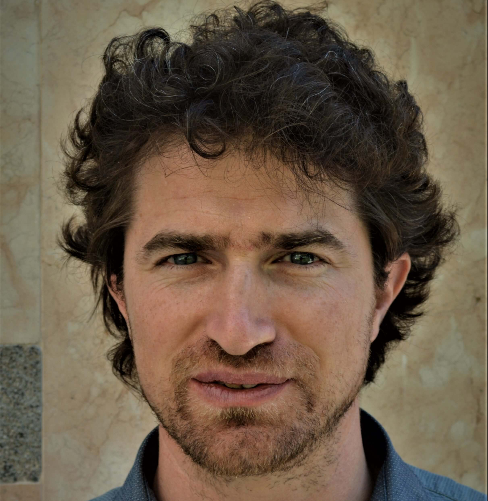

Summary
4D Humans refers to the reconstruction of temporally consistent 3D human models, the 4th dimension being time. Starting from monocular or multi-view image sequences, the objective is to recover human shape, pose, motion, and appearance in a coherent representation.
Despite significant progress, current approaches follow different modeling paradigms, each with clear limitations. Parametric models such as SMPL provide structured and controllable representations but lack geometric detail, while neural methods such as NeRF and 3D Gaussian Splatting improve visual fidelity but struggle with controllability and canonical representations. High-quality digital humans achieve strong realism, but rely on complex acquisition setups or manual effort.
The 4D Human Workshop (4DH) focuses on image- and video-based approaches to 4D human reconstruction, addressing open challenges and emerging solutions toward realistic, controllable, and scalable human representations.
Keynote Speaker

Umberto Castellani
University of Verona, Italy
Umberto Castellani is Full Professor at the Computer Science Department of the University of Verona (Italy). His research focuses on 3D data processing at the intersection of computer vision, graphics, and machine learning, with particular expertise in 3D shape analysis and reconstruction from several acquisition systems. His work includes geometric methods for non-rigid object modeling, matching, and simulation, with a specialization in generative models for simulating the geometric and dynamic properties of the clothed human body. He was Program Chair for 3DV 2018 and General Chair for 3DOR 2013 and STAG 2024.
Modeling Humans and Garments: From Geometry to Simulation
Realistic modeling and simulation of clothed humans play a key role in the creation of digital avatars for applications ranging from fashion and entertainment to computer animation. Despite significant progress, reproducing the complex appearance and behavior of garments remains challenging, particularly because of the wide variability of clothing and the fine-scale wrinkles produced by cloth deformation. Data-driven approaches offer a promising alternative by capturing real garment deformations through 3D scanning. However, directly integrating such observations into physics-based simulation pipelines is far from straightforward and typically requires substantial manual processing. In this talk, we will present recent approaches for decomposing captured clothed humans into their main semantic components, recovering both the underlying human body and the individual garments from 3D observations. We will then discuss how these reconstructed components can provide a bridge between real-world observations and physics-based models, paving the way for inverse cloth simulation and the estimation of garment behavior from captured data.
Call for Papers
The 4D Human Workshop (4DH) invites submissions on methods and applications for reconstructing temporally consistent 3D human models from image and video data.
We welcome contributions addressing a broad range of topics related to 4D human reconstruction, including:
- 4D human reconstruction from monocular or multi-view video
- Parametric human models (e.g., SMPL and related extensions)
- Neural representations (NeRF, 3D Gaussian Splatting, implicit models)
- Modeling of human motion and temporal consistency
- Human appearance, rendering, and relighting
- Multi-person and interaction modeling
- Datasets and benchmarks for dynamic human capture
- Applications in AR/VR, robotics, healthcare, and sports
The workshop will be a half-day event and accepts two types of submissions: original contributions and previously published papers .
Original Contributions
Original papers will be included in the ICIP 2026 proceedings and will undergo a double-blind peer review process.
- Papers must not exceed 5 pages of technical content , including all figures and references
- An optional 6th page may be used for references only
- Submissions must follow the ICIP 2026 format
- Authors are encouraged to review the ICIP submission guidelines: Author Kit
Previously Published Papers
Previously published work can be presented as posters during the workshop and will not be included in the proceedings.
- Submissions will be selected based on relevance and available presentation capacity
- Contributors are asked to submit a 2-page abstract to the organizers at:
Submission Instructions
Unpublished papers must be submitted through the official ICIP submission system:
Authors should select the Satellite Workshop Papers track and choose the 4D Human Workshop from the list of topics.
Please note that no rebuttal phase will be included in the review process.
Important Dates
- Paper submission deadline: May 13, 2026
- Acceptance notification: June 10, 2026
- Camera-ready deadline: July 1, 2026
- Author registration deadline: July 16, 2026
Paper Presentations
All papers accepted for presentation at the workshop will be presented as oral presentations . Each paper will have 15 minutes for the presentation , followed by questions from the audience.
Schedule
September 13, 2026
| Time | Session | Presentation |
|---|---|---|
| 14:15–15:15 | Keynote |
Modeling Humans and Garments: From Geometry to Simulation
Umberto Castellani |
| 15:15–15:30 | Invited Talk |
VolHuMe: a High-Resolution Large Scale Dataset of Volumetric Human Meshes
Giulia Martinelli |
| 16:00–16:15 | Paper Oral |
AK-SLR: Attention-Guided Keypoint-Based Multimodal Sign Language Recognition
Yu-Cheng Chang, Shih-Hsuan Yang |
| 16:15–16:30 | Paper Oral |
Frailty Classification Using SMPL Parameters Derived from Sparse Inertial Motion Capture
Agnieszka Szczesna, Arslan Amjad, Monika Błaszczyczyn, Henryk Josiński, Adam Świtoński |
| 16:30–16:45 | Paper Oral |
Recurrence Quantification Analysis of the center of mass in gait-based sex recognition
Adam Świtoński, Dawid Hanak, Agnieszka Szczesna, Henryk Josiński, Konrad Wojciechowski |
| 16:45–17:00 | Paper Oral |
Patient-Specific Digital Twin with Sensor Fusion for Robot-Assisted Interventions
Davide Nardi, Giulia Martinelli, Niccolò Bisagno, Daniele Fontanelli, Matteo Saveriano, Luigi Palopoli, Edoardo Lamon |
Organizers
Giulia Martinelli
University of Trento
Nicola Garau
University of Trento
Nicola Conci
University of Trento